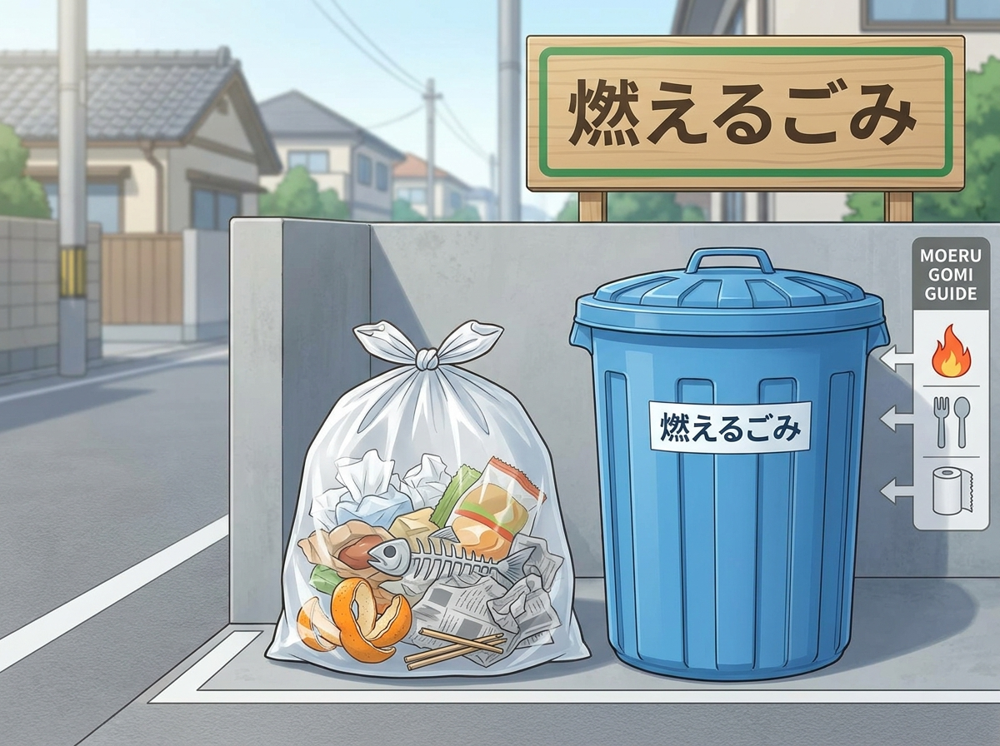
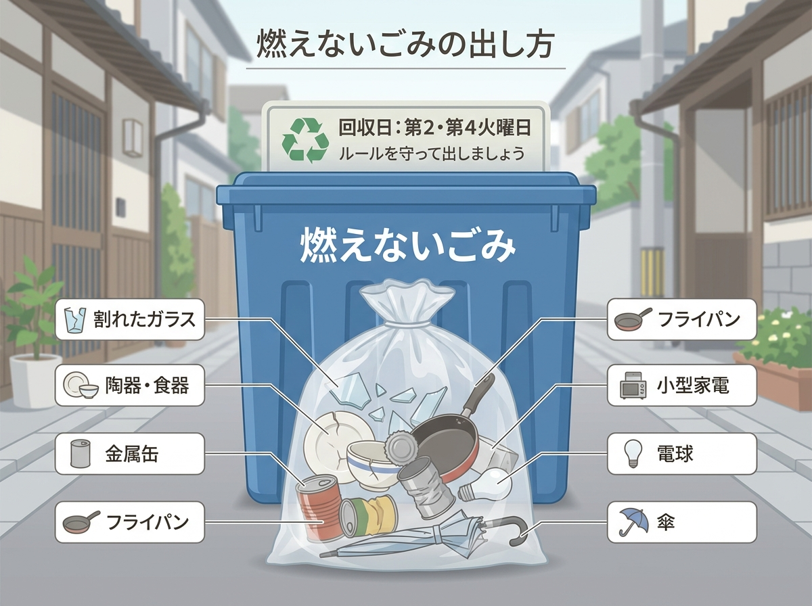

Di Jepang, sampah rumah tangga wajib dipilah (分別／ぶんべつ) sebelum dibuang. Setiap jenis sampah memiliki hari pembuangan, kantong, dan cara penanganan yang berbeda-beda. Memahami sistem ini penting supaya sampah benar-benar diambil oleh petugas dan tidak mengganggu lingkungan sekitar tempat tinggal.
もえるごみ — Sampah yang Bisa Dibakar
燃えるゴミ (Moeru gomi)
- 生ごみ（なまごみ）— sisa makanan
- 紙くず — kertas bekas (tisu, popok)
- かばん・くつ — tas, sepatu
- 木くず — kayu
- 洋服 — pakaian
- 料理でつかったあぶら — minyak bekas masak
もえないごみ — Sampah yang Tidak Bisa Dibakar
不燃ゴミ (Moenai gomi)
- ガラス — kaca (gelas, lampu)
- 陶器（とうき）— keramik
- 鏡（かがみ）— cermin
- 包丁（ほうちょう）— pisau
- はさみ — gunting
- 金属小物（きんぞくこもの）— barang logam kecil, panci/wajan
- スプレーかん — kaleng semprot
- かさ — payung
資源ごみ — Sampah Daur Ulang
Shigen gomi
- びん — botol kaca
- かん — kaleng
- ペットボトル — botol plastik PET
- 紙・段ボール — kertas / kardus
- majalah / koran
- plastik kemasan bersih
プラスチックごみ — Sampah Plastik
Purasuchikku gomi
- Bungkus makanan
- Plastik cup mie instan yang sudah dicuci
- Tray makanan
- Kantong plastik bersih
粗大ごみ — Sampah Besar
Sodai gomi
- Sofa, kasur, lemari
- Meja kayu besar
- Sepeda, stroller
- Peralatan elektronik besar: TV, AC
有害ごみ — Sampah Berbahaya
Yuugai gomi
Sampah yang mengandung zat berbahaya, beracun, atau mudah meledak sehingga tidak boleh dibuang bersama sampah biasa dan harus ditangani secara khusus.
- Baterai
- Lampu neon
- Termometer raksa
- Spray kaleng
- Tabung gas kecil
ゴミだしのひ — Hari & Waktu Pembuangan
| 月曜日 Senin |
火曜日 Selasa |
水曜日 Rabu |
木曜日 Kamis |
金曜日 Jumat |
|
|---|---|---|---|---|---|
| ペットボトル・衣料 Botol PET |
— | ✔ | — | — | — |
| Jenis sampah | もえないごみ (tidak bisa dibakar) |
もえないごみ (tidak bisa dibakar) |
もえるごみ (bisa dibakar) |
もえるごみ (bisa dibakar) |
資源ごみ (daur ulang) |
ゴミ袋 — Kantong Plastik
- Pilah sampah terlebih dahulu, lalu masukkan ke kantong sesuai kategorinya.
- Pisahkan sampah berdasarkan kategori dan masukkan ke kantong sampah yang sesuai.
- Gunakan kantong sampah berbeda untuk setiap jenis sampah (misalnya kantong berlabel 燃えるゴミ untuk sampah yang bisa dibakar dan 燃えないゴミ untuk yang tidak bisa dibakar).
油凝固剤（あぶらぎょうこざい）— Serbuk Pembeku Minyak

Serbuk ini digunakan untuk membekukan minyak goreng bekas agar berubah dari cair menjadi padat, sehingga memudahkan pembuangan minyak tanpa tumpah, mencegah saluran air tersumbat, dan mengurangi bau tidak sedap dari minyak bekas. Tujuannya adalah menjaga kebersihan dapur, melindungi lingkungan agar tidak mencemari air dan tanah, membuang minyak sesuai aturan sampah, serta mencegah kerusakan pipa dan selokan.
Cara penggunaan:
- Masukkan serbuk pembeku minyak ke dalam wajan/teflon berisi minyak bekas.
- Panaskan wajan sambil diaduk.
- Matikan api, lalu tunggu hingga dingin dan minyak membeku.
- Setelah dingin, masukkan minyak beku ke dalam kantong sampah.
- Buang ke dalam kategori sampah もえるごみ (moyasu gomi / sampah yang mudah terbakar).
Langkah Sebelum Membuang Botol PET
- ラベルをはがす — Lepaskan label botol.
- キャップを外す — Pisahkan/lepas tutup botol.
- 中をすすぐ — Bilas bagian dalam botol.
- つぶす — Pipihkan botol, lalu masukkan ke kantong ペットボトル (botol PET).
Langkah Sebelum Membuang Cup Mie Instan
- Cuci bersih bagian dalam cup dari sisa kuah dan bumbu.
- Keringkan cup sebelum dibuang.
- Buang ke kategori プラスチック容器包装 (plastic containers and packaging).
Mesin Pengumpul Botol Plastik (PET)
Sumber: ESSE Online (2024)